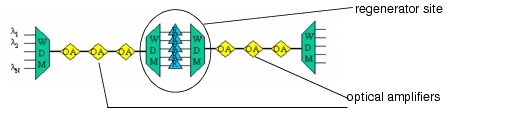
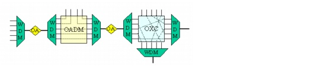

Concepts and Models > SONET/SDH and Optical Technology > WDM Systems
WDM Systems
Applying higher TDM rates can help a network transmit more data at a higher bit rate over an optical fiber. However, this approach is not very scalable because there are practical limitations to the bit rate of a single optical channel. This limitation can be overcome using wavelength division multiplexing (WDM). A WDM system uses multiple channels (each channel modulated with a different TDM signal) transmitted at different wavelengths over a single optical fiber. This technique multiplies the total fiber capacity by the number of multiplexed wavelengths.
A WDM network uses wavelengths to convey traffic. The links consist of fibers equipped with WDM line systems. A line system consists of the following:
- A WDM terminal multiplexer that combines different wavelengths on one multi-wavelength optical channel
- An optical amplifier that boosts the signal of the entire multi-wavelength optical channel at once
- Regenerators that refresh each optical channel (this requires demultiplexing the multi-wavelength optical channel)
The amplifiers and regenerators in this system work as described in SONET/SDH Systems.
The WDM system might be designed so that wavelengths are grouped into spectral transmission bands. This might be due to the architecture of the multiplexers/demultiplexers or the amplifiers. The ability to upgrade the system band-per-band (instead of the entire system at once) allows for a more modular and cost-efficient upgrade scenario. Most of today's WDM systems work in two, three, or even more bands.
Figure 2-5 Terminal Multiplexer, Optical Amplifier, and Regenerator Site

WDM operates in the 1500 nm region of the optical fiber. This wavelength has good transmission characteristics and is preferred due to the availability of an amplifier that can boost all channels with a flat gain.
Traditional SONET/SDH equipment operates at around 1310 nm. A device called a transponder is used to convert the 1310 nm interfaces of SONET/SDH equipment to the WDM wavelengths.
Two types of equipment can add/drop or cross-connect traffic in a node: optical add/drop multiplexers (OADMs) and optical cross-connects (OXCs). An OADM terminates two fiber pairs. It can insert or extract one or more "tributary" wavelength channels into or out of the multi-wavelength "trunk" channel while transparently passing through the remaining wavelengths. OADMs are typically deployed in nodes with limited amounts of add-drop traffic. In banded WDM systems, certain bands of the OADM might be entirely passed through, while other bands drop the traffic destined for that node. For more information, see Optical Nodes: OADM.
An OXC consists of a large switching matrix that enables connectivity between the different ports of the OXC. The demultiplexed channels of the terminated fibers are interconnected to the trunk ports of the OXC; the add/drop channels are fed into the OXC through the tributary ports.
You can distinguish between different types of OXC switching matrices. Non-blocking OXCs can switch between any two ports, while wavelength plane or WP-OXCs can switch ports only on the same wavelength. For more information, see Optical Nodes: WP-OXC.
Figure 2-6 OADM and OXC

| Home © 1987-2007 OPNET Technologies, Inc. All Rights Reserved. This software may be covered by one or more U.S. Patents. See complete patent notice in the Legal Notices section. OPNET Support Center |